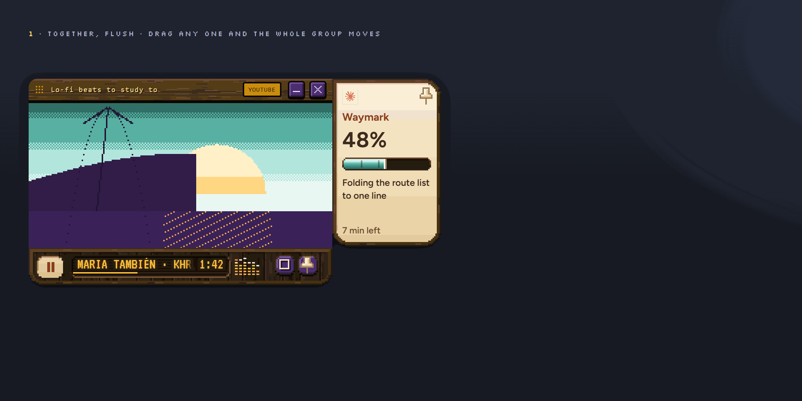
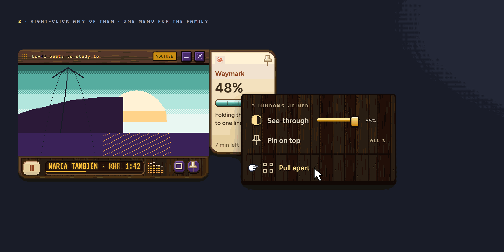
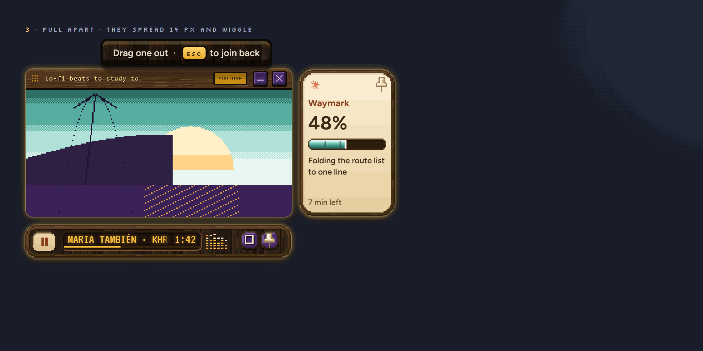
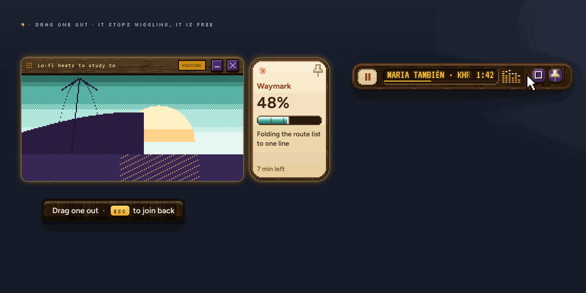
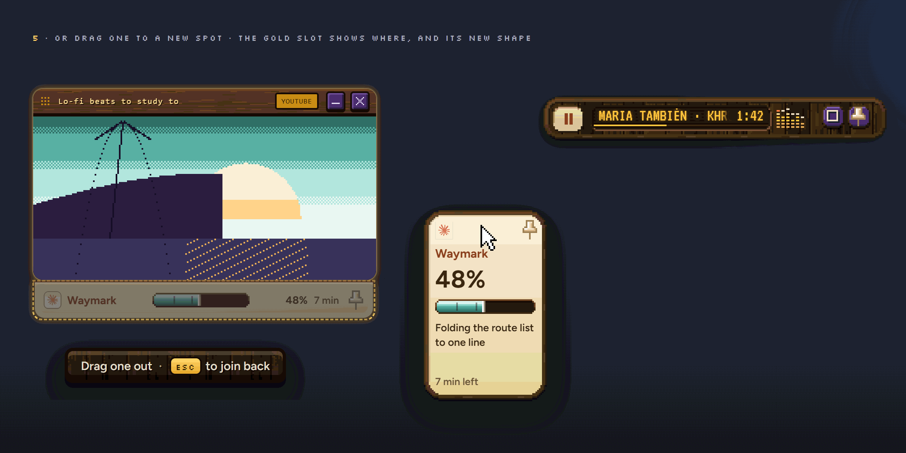
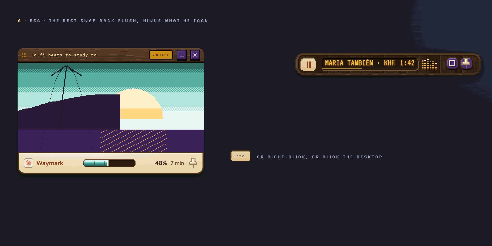

1TOGETHER · SHOWN 2×

Snapped flush: the sides that touch go square, one shadow. Grab any of them and the whole group moves.
v1 · 22 Oct: how a snapped family comes apart, and how it goes back together
Your pop-outs snap together flush and drag as one. To take one out, right-click any of them and pick Pull apart: they spread a little and wiggle, like apps on an iPhone. Drag out the ones you want free, or drag one to a new spot. Press Esc and the rest snap back together.
WHAT TO PICK Yes to the six steps and the moving preview, or point at a step, a timing or the wiggle to change.
The whole thing in one loop, about 14 seconds. These are the real windows, cut out from the pictures below and moved by this page.

Snapped flush: the sides that touch go square, one shadow. Grab any of them and the whole group moves.

One menu for the whole family, in Aang's right-click wood. See-through and Pin on top work on all of them at once. Pull apart is the way to take one out.

They spread 14 px apart on a spring, get their round corners back, and wiggle: a tiny shimmy and a soft gold glow. A small hint says what to do.

Grab one and pull it away. It stops wiggling the moment you grab it. Let go away from the group and it is on its own.

Drag one toward another side of the group and a gold slot shows where it will land, already in its new shape: the job, moved from the right to the bottom, becomes a wide strip.

Esc, a right-click on any of them, or a click on the empty desktop: the wiggle stops and the rest snap back flush. The one you took out stays where you put it.
Calm and small. The same spring as the music player's fold, so the whole family feels like one thing.
| WHAT | TIMING | WHAT YOU SEE |
|---|---|---|
| Menu opens | 120 ms | Fades in where you clicked, the way Aang's own menu does. Never on top of Aang. |
| Spread | spring 0.35 s, damping 0.7 | The biggest window stays put; the others slide 14 px away from it, with the smallest bit of bounce. Every joined corner rounds back to 12 px. |
| Wiggle: shimmy | 1 px, every 0.26–0.34 s | Each window nudges one pixel left, right, up, down on its own little loop, out of step with the others, so they look alive, not shaky. |
| Wiggle: glow | 1.2 s breathe | A soft gold edge brightens and dims. The one you are holding stops shimmying and its glow turns into a lifted shadow. |
| Hint line | 200 ms fade | "Drag one out · Esc to join back", above the group. Goes when it joins. |
| Drag out | follows the mouse | Let go 40 px or more from the group: it is free, with its own corners and shadow. Closer than that: it slides back to its place (spring 0.4 s, damping 0.8). |
| Drop slot | 120 ms fade | Shows when the window's middle comes within 60 px of an open side: a gold dashed outline with a faint picture of the window in its new shape. |
| Reshape | 0.25 s cross-fade, then spring 0.4 s | Let go over a slot: the window turns into its new shape (a column becomes a strip, never turned sideways) and settles into the slot. |
| Join back | spring 0.5 s, damping 0.825 | Esc, right-click any of them, or click the empty desktop. Gaps close, touching corners go square on the last 2 px, one shared shadow. Under 1% overshoot. |
| No timer | – | It waits for you. Nothing joins back by itself. |